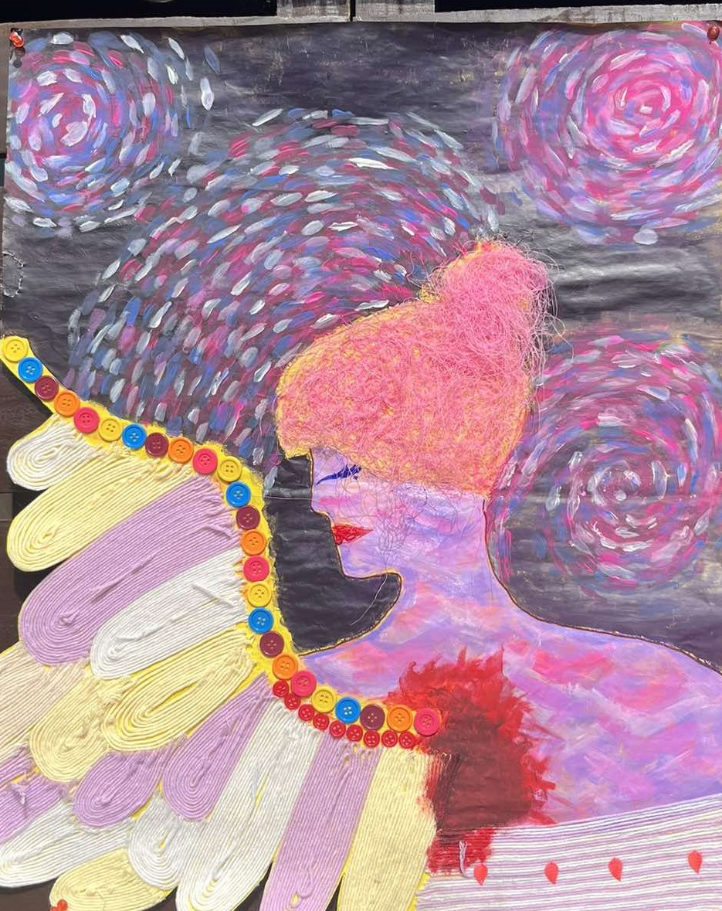

The Fallen Luciña
In the starry night, a naughty fairy named Luciña flitted through the sky, leaving a trail of mischief in her wake. She sprinkled sleeping dust on the animals, tangled the fireflies' lights, and rearranged the stars into silly shapes. Her antics caught the attention of Luna, the Moon Guardian, who warned Luciña to stop her pranks. Ignoring the warning, Luciña continued her playful chaos until Luna's patience ran out. With a wave of her hand, Luna cast a spell, and Luciña felt a sharp pang as one of her delicate wings vanished. Grounded and remorseful, Luciña realized the cost of her mischievousness, learning a hard lesson under the watchful eyes of the night sky.